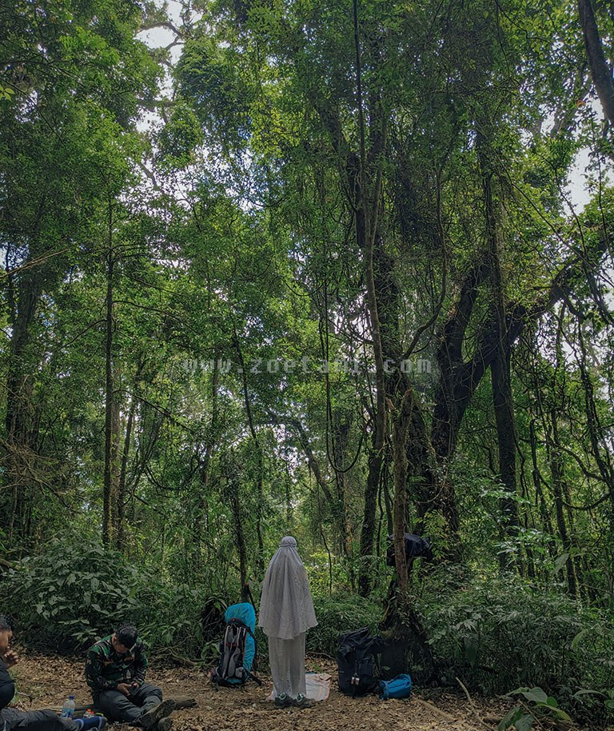

Persiapan sebelum berangkat
Di pendakian pertama, capeknya sering datang dari bawaan yang kebanyakan atau malah kurang. Ini daftar dasarnya.
Barang bawaan
| Barang | Buat apa | Status |
|---|---|---|
| Sepatu trekking atau sepatu dengan grip bagus | Biar nggak gampang kepeleset di batu atau tanah licin | Wajib |
| Jaket dan jas hujan | Di gunung suhu turun drastis dan hujan bisa datang tiba-tiba | Wajib |
| Air minum dan makanan ringan | Jaga tenaga selama jalan | Wajib |
| Senter atau headlamp | Buat jalan atau di tenda setelah gelap | Wajib |
| Obat pribadi dan P3K | Buat luka kecil atau keluhan kesehatan | Wajib |
| Trekking pole | Meringankan beban lutut waktu turun | Opsional |
Aturan di gunung
Yang perlu diingat
- Ikuti jalur yang sudah ada.
- Jangan misah dari rombongan.
- Bawa turun semua sampah, bungkus permen juga.
- Jangan metik tanaman atau ambil apa pun dari gunung.
- Kalau cuaca jelek atau badan nggak enak, turun aja. Puncak nggak akan ke mana-mana.

Latihan fisik
Satu atau dua minggu sebelum berangkat, mulai biasain jalan kaki, jogging santai, atau naik turun tangga. Nggak perlu berlebihan, yang penting badan nggak kaget.